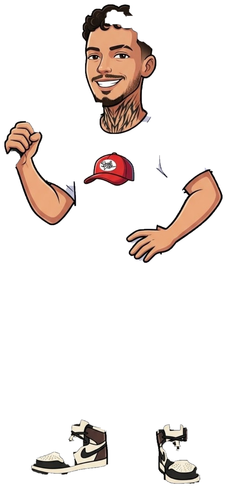

Os vídeos e as letras ficam no YouTube. Use versões oficiais de karaokê liberadas para incorporação.
✳TEM GOGÓ.
◌ Sincronizando NO CAMARIM
✦ SUA ÁREA NO TEM GOGÓ ✦
Oii, estrela!
“Escolhe teu hit e depois vem ativar o mic. Eu vigio esse palco!” — DIVA GOGÓ
📍 Sala🎟️ --------
▶ NO PALCOAguardando o show
⏭ PRÓXIMOSSem músicas na fila
🎙️ MEU MICROFONEDesligado
🏆 SEU ÚLTIMO SHOW—Mandou bem!
🎤 DIVA GOGÓ TE CHAMOU!Sua apresentação só começa quando confirmar.
Prepare seu microfone
Ligue seu microfone, confira a captação e toque em Estou pronto(a). O host liberará o vídeo quando todos confirmarem.
🔴 Microfone desligado
🎤
É SUA VEZ DE BRILHAR!O palco tá te esperando, estrela!
✦ A ESTRELA DA VEZ É VOCÊ ✦

Sua vez!Aguardando a Diva
SEU MICROFONE DIGITAL● Desligado
Estado do microfoneConfira o sinal antes de cantar.
🔒 Microfone desligado — toque para autorizar
Preparada pra entregar TUDO?
Toque para permitir o microfone. O áudio vai direto para o palco pelo WebRTC.
Altera só o volume enviado à TV. Não mexe na nota; acima de 100% pode distorcer.
NÍVEL DO SOM • AGUARDANDO PERMISSÃO
📡 Sua nota vem somente das medições deste celular. O notebook não será usado como microfone.
💡 A avaliação NÃO mede afinação. Evite deixar o celular perto das caixas: o playback vazando pelo microfone pode confundir o medidor. Use fone para testar ou afaste as caixas do telefone.
🎵 NO PALCO AGORA
A próxima música pode ser a sua!
Aguardando a fila...
🔎 BUSCAR NO CATÁLOGO
PASSO 1: escolha o hit. Depois você decide se canta sozinho(a), em dueto ou com até quatro pessoas. A busca consulta nosso acervo antes de usar serviços externos.
🎶 Procure no acervo primeiro — só busque fora quando precisar!
🔗 Tenho um link (a reprodução depende das regras do YouTube)
✦ O SETLIST
★ HIT ATRÁS DE HIT ★
O acervo do povo 🔥
Todas as músicas da playlist e as mais cantadas. Confira o catálogo completo sem gastar nenhuma pesquisa externa!
Carregando destaques...
💌 RECADO PARA A DIVA
Solta o recado, estrela!
Escreva ou dite uma frase no celular. Ela aparece em texto na tela da TV, entre as músicas. Nada de áudio gravado.
160 caracteres • sujeito à confirmação antes do envio • pode depender de conexão com a internet para ditar